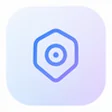
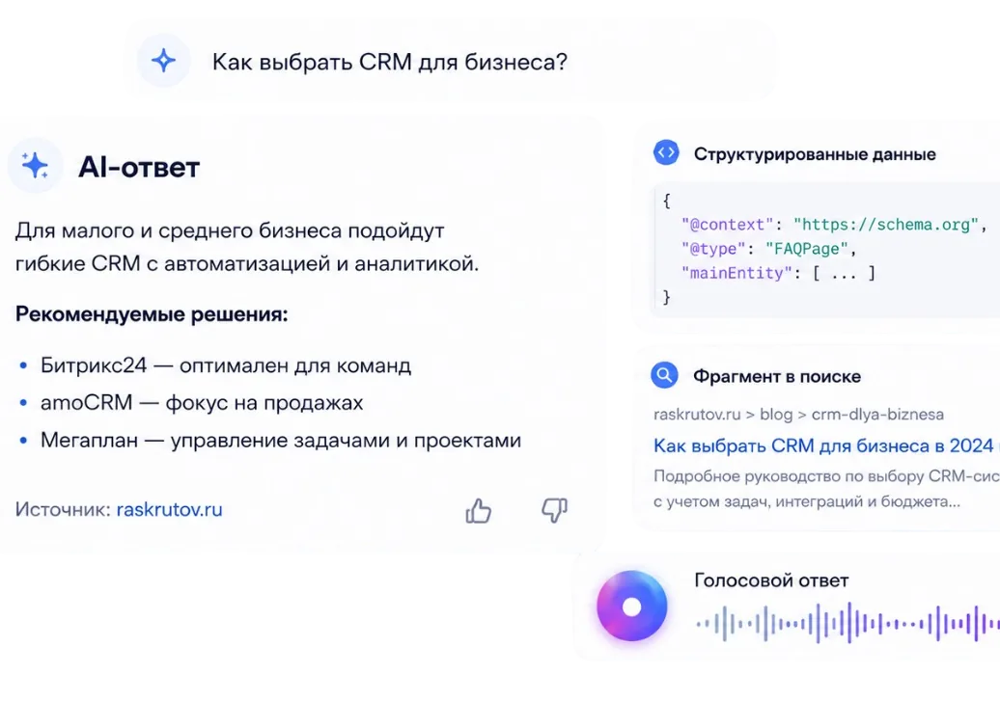

AEO и SEO
SEO отвечает за органическую видимость страниц. AEO усиливает ясность ответов, FAQ, сущностей и структурированных данных. Оба направления опираются на техническую базу, полезный контент и логичную архитектуру сайта.
Комплексные digital-решения для роста бизнеса
Оптимизация для AI-ответов, нейропоиска и новых поисковых интерфейсов
Помогаем сделать сайт понятным для поисковых систем, AI-сервисов и пользователей, чтобы бренд, услуги и экспертные ответы могли корректно отражаться в современной поисковой выдаче.

Экспертный контент
AEO (Answer Engine Optimization) — подготовка сайта, контента и структуры данных так, чтобы поисковые системы и AI-сервисы могли корректно понимать услуги компании и использовать понятные ответы в современных форматах выдачи.
SEO отвечает за органическую видимость страниц. AEO усиливает ясность ответов, FAQ, сущностей и структурированных данных. Оба направления опираются на техническую базу, полезный контент и логичную архитектуру сайта.
GEO здесь означает работу с географией спроса: услуги, города и локальные сценарии должны быть описаны ясно, чтобы системы правильно связывали бренд с нужным регионом и запросом.
AI-системам нужны ясные определения, завершённые ответы, согласованные заголовки и подтверждённые факты. FAQ, экспертный контент и Schema работают вместе с коммерческими страницами.
AEO не заменяет SEO. Без точных формулировок, подтверждённых данных и логичной структуры подготовка к AI-выдаче теряет смысл.
Бренд может появляться в ответах нейросетей и AI-сервисов, если информация о компании понятна и структурирована.
Подготовка под голосовые сценарии и новые поисковые интерфейсы, где ответ важен не меньше ссылки.
Корректная разметка помогает системам понимать услуги, организацию и FAQ без подмены фактов.
Пользователи приходят с уже сформированным запросом из релевантных поисковых и AI-сценариев.
Ранняя подготовка сайта к AI-выдаче даёт запас прочности относительно конкурентов без структурированного контента.
Глубокий и аккуратный контент усиливает доверие и связывает информационные материалы с коммерческими страницами.
Мы не обещаем гарантированное попадание в ответы ИИ, фиксированные позиции или конкретный рост заявок. Результат зависит от ниши, конкуренции, качества сайта и поведения алгоритмов.
Сайт слабо представлен в ответах AI-сервисов или поисковых подсказках.
Поисковые системы неточно понимают услуги и предложения компании.
На сайте нет ответов на реальные вопросы клиентов.
Информация о компании разрознена по страницам без единой логики.
Страницы не имеют ясной структуры заголовков и смысловых блоков.
Экспертный контент не связан с коммерческими услугами.
FAQ отсутствует или не помогает пользователю принять решение.
Нужно объединить SEO, контент, структуру и Schema в одну рабочую систему.
Изучаем продукт, сегменты клиентов и вопросы, с которыми приходят в поиск.
Проверяем архитектуру, посадочные, дубли смыслов и точки, где система теряет ясность.
Собираем сценарии запросов и формулируем ответы, которые закрывают реальные задачи клиента.
Готовим понятные ответы, усиливаем экспертные материалы и связываем их с услугами.
Настраиваем разметку, заголовки и смысловые блоки в соответствии с видимым контентом.
Улучшаем перелинковку, коммерческие страницы и рекомендации по развитию AI Search.
Услуги, ответы и сущности описаны логично и согласованы между страницами.
Подготовлены формулировки, которые закрывают типичные сомнения и сценарии выбора.
FAQ помогает пользователю и соответствует JSON-LD без скрытых вопросов.
Schema отражает видимое содержание: услугу, организацию, крошки и FAQ.
Коммерческие и информационные материалы связаны естественной перелинковкой.
Контентная база и рекомендации готовы для дальнейшего развития видимости.
В отчётах фиксируем проверяемые изменения: структуру, FAQ, Schema, качество страниц и рекомендации. Не публикуем вымышленные проценты роста.
Анализируем текущую представленность бренда в AI-ответах, нейропоиске и структуре сайта.
Формируем приоритеты по контенту, сущностям, FAQ и данным под цели бизнеса.
Пишем и перерабатываем ответы под вопросы, намерения и коммерческие сценарии.
Внедряем Schema, FAQ и согласованные форматы, которые соответствуют видимому контенту.
Усиливаем перелинковку коммерческих и экспертных страниц вместе с SEO-базой.
Оцениваем качество страниц и формируем рекомендации по дальнейшему развитию.
SEO отвечает за органическую видимость страниц. AEO помогает структурировать ответы на вопросы. Техническая оптимизация нужна обоим направлениям. FAQ, экспертность и Schema должны соответствовать видимому содержимому. Коммерческие страницы и информационный контент работают вместе.
Подробнее о классическом продвижении: SEO-продвижение сайтов. Если нужен новый сайт или переработка структуры: создание сайтов. Примеры проектов: кейсы Raskrutov.
Органика в Google и Яндекс, техническая база, контент и рост коммерческих запросов.
Подробнее ⟶Чистая структура, скорость, SEO/AEO-основа и страницы, готовые к заявкам.
Подробнее ⟶Быстрый спрос по коммерческим запросам в связке с сайтом и аналитикой.
Подробнее ⟶Raskrutov работает с бизнесом дистанционно и помогает компаниям из разных городов Казахстана с сайтами, SEO, AEO, контентом и digital-инфраструктурой. Выберите город, чтобы перейти на региональную страницу веб-студии.
 AEO/GEO в Астане
AEO/GEO в Астане
 AEO/GEO в Алматы
AEO/GEO в Алматы
 AEO/GEO в Шымкенте
AEO/GEO в Шымкенте
 AEO/GEO в Актау
AEO/GEO в Актау
 AEO/GEO в Актобе
AEO/GEO в Актобе
 AEO/GEO в Атырау
AEO/GEO в Атырау
 AEO/GEO в Караганде
AEO/GEO в Караганде
 AEO/GEO в Кокшетау
AEO/GEO в Кокшетау
 AEO/GEO в Костанае
AEO/GEO в Костанае
 AEO/GEO в Кызылорде
AEO/GEO в Кызылорде
 AEO/GEO в Павлодаре
AEO/GEO в Павлодаре
 AEO/GEO в Петропавловске
AEO/GEO в Петропавловске
 AEO/GEO в Семее
AEO/GEO в Семее
 AEO/GEO в Талдыкоргане
AEO/GEO в Талдыкоргане
 AEO/GEO в Таразе
AEO/GEO в Таразе
 AEO/GEO в Туркестане
AEO/GEO в Туркестане
 AEO/GEO в Уральске
AEO/GEO в Уральске
 AEO/GEO в Усть-Каменогорске
AEO/GEO в Усть-Каменогорске
Расскажите о сайте и задачах — подготовим понятный план по структуре, FAQ, Schema и связке с SEO. Ответим в ближайшее время.
Отправьте заявку
Оставьте контакты — предложим следующий шаг под вашу задачу.
Наш офис: Казахстан, Петропавловск, ул. М. Жумабаева, 109, 6 этаж, офис 606а.
Проведём аудит AI-видимости и подготовим план по структуре, FAQ, Schema и связке с SEO — без обещаний гарантированных позиций.
Обсудим ваш проект?
Оставьте заявку — предложим план по AEO/GEO и связке с SEO под ваши задачи